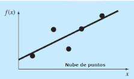
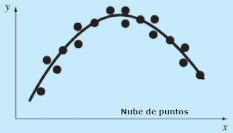

<!-- Main content -->
<section class="content px-2">
  <div class="container-fluid">
    <!-- Default box -->
    <div class="card  card-info card-outline">
      <div class="card-body px-5">
        <div class="row">
          <div class="col-md-6">
            <p class="my-0">
              Mínimos cuadrados es una técnica de análisis numérico enmarcada dentro de la optimización
              matemática.
            </p>
            <p class="my-0">
              En la ciencia y en la ingeniería se da a menudo, el caso de que un experimento produce un
              conjunto de datos (x<sub>1</sub>, y<sub>1</sub>),(x<sub>2</sub>,
              y<sub>2</sub>),.....,(x<sub>n</sub>, y<sub>n</sub>). El objetivo es determinar una función y
              = f(x) que relacione las variables y que sea la que mejor se aproxime a los datos, de
              acuerdo con el criterio de mínimo error cuadrático.
            </p>
            <p>
              El principio de Mínimos Cuadrados es intentar minimizar la suma de los cuadrados de las
              diferencias entre los puntos que tenemos como datos y los generados por la función elegida,
              es decir, se elige la curva que de el mejor ajuste posible. Se usan los cuadrados de las
              distancias porque de esa manera no importa si el punto está ubicado por encima o por debajo
              de la curva propuesta.
            </p>
            <h5>Diagrama de dispersión y modelos de regresión</h5>
            <p class="my-0">
            <figure class="figure img-thumbnail ">
              
              <figcaption class="figure-caption">Regresión Lineal</figcaption>
            </figure>
            <figure class="figure img-thumbnail ">
              
              <figcaption class="figure-caption">Regresión No Lineal</figcaption>
            </figure>
            </p>
            <p class="my-0">
              Supongamos entonces tener un conjunto de datos experimentales.
            </p>
            <div class="d-flex align-items-center">
              <table class="table-bordered">
                <tr>
                  <td>&nbsp;&nbsp;x&nbsp;&nbsp;</td>
                  <td>&nbsp;&nbsp;x<sub>1</sub>&nbsp;&nbsp;</td>
                  <td>&nbsp;&nbsp;x<sub>2</sub>&nbsp;&nbsp;</td>
                  <td>&nbsp;&nbsp;...................................&nbsp;&nbsp;</td>
                  <td>&nbsp;&nbsp;x<sub>n</sub>&nbsp;&nbsp;</td>
                </tr>
                <tr>
                  <td>&nbsp;&nbsp;y</td>
                  <td>&nbsp;&nbsp;y(x<sub>1</sub>)&nbsp;&nbsp;</td>
                  <td>&nbsp;&nbsp;y(x<sub>2</sub>)&nbsp;&nbsp;</td>
                  <td>&nbsp;&nbsp;...................................&nbsp;&nbsp;</td>
                  <td>&nbsp;&nbsp;y(x<sub>n</sub>)&nbsp;&nbsp;</td>
                </tr>
              </table>
              &nbsp;&nbsp;&nbsp;
              <span [appMath]>
                $ \require{{'{'}}enclose{{'}'}}
                \enclose{{'{'}}circle{{'}'}}{{'{'}}1{{'}'}} $
              </span>
            </div>
            <p>Y además suponemos conocida la forma de una función empírica. <br>
              <span [appMath]>
                $ \mathcal y = f (x, a_1, a_2,...., a_n) \
                \require{{'{'}}enclose{{'}'}}
                \enclose{{'{'}}circle{{'}'}}{{'{'}}2{{'}'}} $
              </span>
              <br>
              Donde a<sub>1</sub>, a<sub>2</sub>,...., a<sub>n</sub> son coeficientes
              que deseamos determinar. <br>
              Las desviaciones, o el error, entre la ordenada de la función empírica (2) y el valor de la
              tabla (1) se indica como: <br>
              <span [appMath]> $ \mathcal \varepsilon_i f \ (x, a_1, a_2,...., a_n) - y_i $ </span>
            </p>
            <p>
              Ahora aplicando el método de mínimos cuadrados, definimos los coeficientes a<sub>1</sub>,
              a<sub>2</sub>,...., a<sub>n</sub>, de manera que la suma de los cuadrados de las
              desviaciones sea mínima. <br>
              <span [appMath]>
                $ \mathcal \delta (a_1, a_2,...., a_n) =
                \sum_{{'{'}}i=1{{'}'}}^n [f (x, a_1,
                a_2,...., a_n) - y_i]^2 \
                \require{{'{'}}enclose{{'}'}}
                \enclose{{'{'}}circle{{'}'}}{{'{'}}3{{'}'}} $
              </span>
            </p>

            <p>
              Aplicando las condiciones que se tiene que satisfacer para un valor extremo de la
              ecuación
              anterior la función de varias variables <br>
              <span [appMath]>$ \mathcal \delta (a_1, a_2,...., a_n) $ </span>
            </p>
            <p>
              En:
              <span [appMath]>
                $ \mathcal {{'{'}} \delta s \over \delta a_1{{'}'}} = 0; {{'{'}}\delta s \over
                \delta
                a_2{{'}'}} = 0;....;{{'{'}} \delta s \over \delta a_n{{'}'}} = 0; \
                \require{{'{'}}enclose{{'}'}}
                \enclose{{'{'}}circle{{'}'}}{{'{'}}4{{'}'}} $
              </span>
            </p>
          </div>
          <!-- /.col -->
          <div class="col-md-6">
            <p>
              Si este sistema tiene solución y es única, esta es la buscada. <br>
              Si la función empírica es lineal respecto a los coeficientes a<sub>1</sub>,
              a<sub>2</sub>,....,
              a<sub>n</sub>, lo podemos expresar de la forma:
              <br>
              <span [appMath]>
                $ \mathcal f (x_1, a_1, a_2,...., a_n) = a_1 \phi_1(x) + a_2 \phi_2(x) + .... +
                a_n \phi_n(x) $
              </span>
            </p>
            <p>
              Y la función <em> s(a<sub>1</sub>, a<sub>2</sub>,...., a<sub>n</sub>) </em>toma la
              forma:
              <br>
              <span [appMath]>
                $ \mathcal a(a_1, a_2,...., a_n) = \sum_{{'{'}}i=1{{'}'}}^n
                \left[ \underbrace {{'{'}}(a_1 \phi_1(x_i) + a_2 \phi_2(x_i) + .... + a_n
                \phi_n(x_i))
                {{'}'}}_{{'{'}}f (x_i, a_1, a_2,...., a_n){{'}'}} - y_i
                \right]^2 $
              </span>
            </p>
            <p>
              Desarrollando el sistema (4) tenemos: <br>
              <span [appMath]>
                $ \mathcal {{'{'}} \delta s \over \delta a_1{{'}'}} = 0 \Rightarrow 2
                \sum_{{'{'}}i=1{{'}'}}^n
                \left[a_1 \phi_1(x_i) + a_2 \phi_2(x_i) + .... + a_n \phi_n(x_i) - y_i \right]
                \cdot \phi_1(x_i) = 0 \\
                \mathcal {{'{'}} \delta s \over \delta a_2{{'}'}} = 0 \Rightarrow 2
                \sum_{{'{'}}i=1{{'}'}}^n
                \left[a_1 \phi_1(x_i) + a_2 \phi_2(x_i) + .... + a_n \phi_n(x_i) - y_i \right]
                \cdot \phi_2(x_i) = 0 \
                \require{{'{'}}enclose{{'}'}}
                \enclose{{'{'}}circle{{'}'}}{{'{'}}5{{'}'}} \\
                \mathcal {{'{'}} \delta s \over \delta a_n{{'}'}} = 0 \Rightarrow 2
                \sum_{{'{'}}i=1{{'}'}}^n
                \left[a_1 \phi_1(x_i) + a_2 \phi_2(x_i) + .... + a_n \phi_n(x_i) - y_i \right]
                \cdot \phi_n(x_i) = 0 $
              </span>
            </p>
            <p>
              Desarrollando tenemos: <br>
              <span [appMath]>
                $
                \mathcal {{'{'}} \delta s \over \delta a_1{{'}'}} = 0 \Rightarrow a_1
                \sum_{{'{'}}i=1{{'}'}}^n \phi_1(x_i) \cdot \phi_1(x_i) +....+
                \sum_{{'{'}}i=1{{'}'}}^n \phi_n(x_i) \cdot \phi_1(x_i) -
                \sum_{{'{'}}i=1{{'}'}}^n y_i \cdot \phi_1(x_i) = 0\\
                \mathcal {{'{'}} \delta s \over \delta a_2{{'}'}} = 0 \Rightarrow a_1
                \sum_{{'{'}}i=1{{'}'}}^n \phi_1(x_i) \cdot \phi_2(x_i) +....+
                \sum_{{'{'}}i=1{{'}'}}^n \phi_n(x_i) \cdot \phi_2(x_i) -
                \sum_{{'{'}}i=1{{'}'}}^n y_i \cdot \phi_2(x_i) = 0 \
                \require{{'{'}}enclose{{'}'}}
                \enclose{{'{'}}circle{{'}'}}{{'{'}}6{{'}'}} \\
                \mathcal {{'{'}} \delta s \over \delta a_n{{'}'}} = 0 \Rightarrow a_1
                \sum_{{'{'}}i=1{{'}'}}^n \phi_1(x_i) \cdot \phi_n(x_i) +....+
                \sum_{{'{'}}i=1{{'}'}}^n \phi_n(x_i) \cdot \phi_n(x_i) -
                \sum_{{'{'}}i=1{{'}'}}^n y_i \cdot \phi_n(x_i) = 0
                $
              </span>
            </p>
            <h5>Análisis de Casos Particulares</h5>
            <p>
              Dado un set de datos cualquiera con 2 o más puntos P(x,y).
              <br>
              En este sistema informático podemos analizar las siguientes funciones empíricas:
            </p>
            <ul>
              <li>Función de la recta</li>
              <li>Función Polinómica</li>
              <li>Función Exponencial</li>
              <li>Función Potencial</li>
            </ul>
            <p>Y el cálculo de la Bondad del Ajuste</p>
          </div>
          <!-- /.col -->
        </div>
        <!-- /.row -->
      </div>
      <!-- /.card-body -->
    </div>
    <!-- /.card -->
  </div>
  <!-- ./container-fluid -->
</section>
<!-- /.content -->
